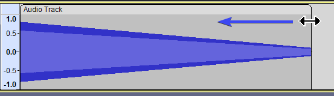
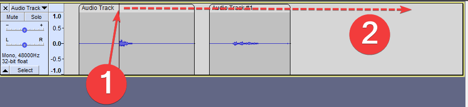
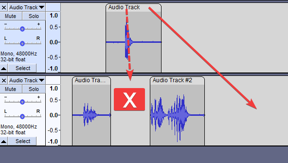
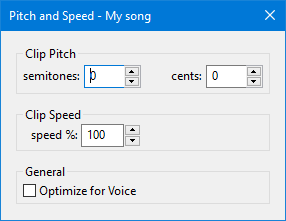
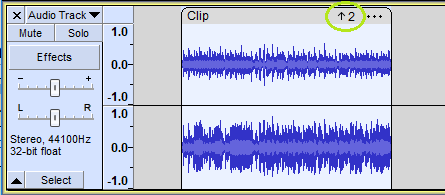
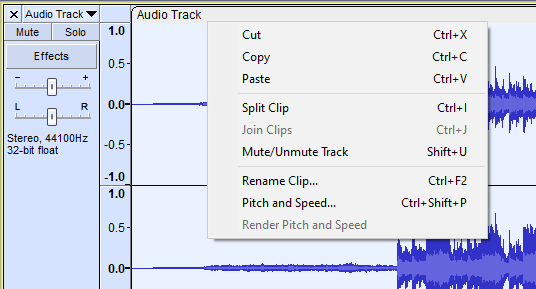
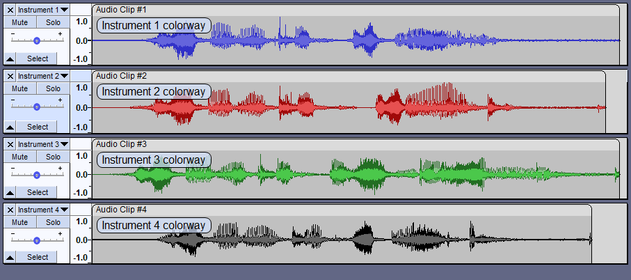
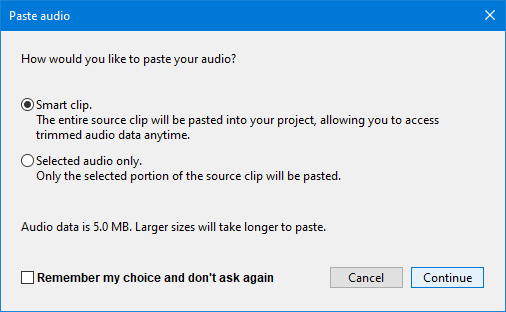

Audio Clips
- Each clip can be moved around independently of other clips.
- Clip names can be edited to make them more meaningful.
- Clips can be trimmed non-destructively, that is without losing audio. The audio is just hidden and can be restored later.
Clips are contained in audio tracks.
- An audio track can be empty but usually contains one or more clips.
- All the clips in an audio track are affected by settings in that track, including:
- gain/volume settings
- pan settings
- real-time effects
The images on this page have RMS display turned on, the light color in the center of the waveform.
|
Contents
- Channels, Clips and Tracks
- Trimming a Clip
- Renaming Clips
- Moving Clips
- Moving a Clip Between Tracks
- Time-stretching - changing the speed of clips
- Changing the pitch of clips
- Creating Clips - Splitting Clips
- Merging or joining Clips
- Navigating and selecting Clips
- Clip context menu
- Track colors
- Moving colored Clips
- Pasting clips or tracks into a different project
Channels, Clips and Tracks
The terms channel, clip and track can be a little confusing, especially because some applications may use them to mean slightly different things. Within Audacity, the meaning is as follows:
- A channel is for audio recording (input) or playback (output). Audacity can record two channels of input (stereo), and more if you have a special sound card or audio device that supports more than two simultaneous channels. Audacity supports only two channels of playback (output), no matter what kind of audio hardware you have.
- A clip is a section of audio inside an audio track. Note that a non-empty audio track contains at least one clip.
- An audio track is like one instrument in your symphony, or one voice in your podcast. You can add more tracks, and all of them will be mixed together to create your final output, but during editing you can manipulate each track independently. If you have an interview recorded with two microphones, each one can go in a separate track. If you have background music, that could go in a third track. If a track contains only one clip, you can move the entire contents of the track along the timeline. If the track is split into multiple clips you can move each of those clips independently.
Trimming a Clip
- 
You can trim a clip by dragging near the upper corner of its left and right edges. Alternatively you can use .
- Doing so will hide the waveform that goes beyond it (as opposed to fully deleting it).
- If you make some edits to the clip and then later decide to un-trim it, you can just grab the upper corner again and extend it.
- The hidden parts will not be played or exported.
- Effects applied to a trimmed clip will not affect the hidden parts of the trimmed clip, only the visible portion of the clip is affected.
| Note carefully that there is no visual cue to indicate that a clip has hidden audio data. |
Renaming Clips
Clips initially take their name from the track in which they are created. The clip names can be edited to make them more meaningful.
To edit a clip name double-click in the clip-handle drag-bar and the clip name will open up for editing.
Alternatively you can select the clip, then right-click in the clip and use the context menu which has an entry for .
Moving Clips
To move a clip, simply drag and drop it using the Clip-handle drag-bar (the light area with the rounded corners) at the top of the clip.
If you have snapping turned on the moved clips will snap to your preferred snap time format.
- 
To move multiple clips at once, select all of the clips you want to move using the Selection Tool , then drag a Clip-handle within the selected region to move all selected clips. This will also move the selection area with it.
, then drag a Clip-handle within the selected region to move all selected clips. This will also move the selection area with it.
If you click a Clip-handle drag-bar outside of the selected area, the selected area will stay where it is and you'll only move one clip.
| Note that moving clips can make use of the yellow Boundary Snap Guides (also seen in the chapter on Audacity Selection). When you move a clip, Audacity will snap the left or right boundary of a clip to the nearest edge of a clip in any other track marking it with a yellow vertical line, making it very easy to line up clips during editing. |
Moving stereo Clips
Time-shifting a clip in a stereo track will move both channels equally and this applies even if the clips in the two channels are not synchrous that is do not fully line up or are sepatate.
| If you want to move clips in a stereo track independently from each other, you need to split the stereo track into mono tracks first. |
Moving to negative time
If an audio track is dragged to the left (earlier on the Timeline) audio data may be hidden before the start of the track. This is indicated by the presence of two arrows at the left edge of the track.

Or unless Export Multiple is used with "Split files based on Tracks". In this Export Multiple by tracks case, the entire audio of each track is exported, including that behind zero, regardless of any selection.
Preference for "Editing a clip can move other clips"
There is a preference setting in Tracks Behaviors Preferences that controls whether following clips to the right cab or cannot move when editing to the left of them.
- When this is checked "off" (default setting) "Editing a clip can move" pins clips so that they cannot move in response to an edit in another clip. When removing content, any following clips will not be allowed to move back. When pasting, an error message will display if there is not enough room to paste without moving the following clips.
- When this is checked "on" (non-default setting) if the track has been split into more than one clip, any clips following to right of the edit point can always move as necessary in response to pasting, cutting, deleting or other change that adds or removes content.
See Preferences settings that affect Edit behavior for details of what this setting does.
| Sync-Lock trumps (over-rides) this setting. If you have Sync-Lock enabled in the Tracks Menu, then clips can move even when this setting is turned "off". |
Moving a Clip Between Tracks
You can drag and drop on the clip-handle drag-bar to move a clip to a different track, but there must be room for the clip between the clips on the second track.
- 
Time-stretching - changing the speed of clips
You can change the speed of the clip by holding Alt and dragging near the upper corner of its left and right edges, note that the cursor changes when you do this. Doing so will also change the pitch of the clip.
- when you apply an effect to a time-stretched clip the changed speed of the clip will be automatically rendered,
- if you apply an effect or generator to a selection within a time-stretched clip then Audacity will split the original clip so that the the selection can be rendered as part of applying the effect.
Time-stretching may affect stereo image:
|
Changing pitch and/or speed
Alternatively, you can select the clip and then right-click in it to get the context menu which has a command which enables you to set a precise changed pitch or speed.
Selecting this command will cause the following dialog to be displayed. You can change the pitch by semitones and cents, and/or enter any % speed change, by typing in the Pitch and Speed box.
This is unlike the effect Change Speed and Pitch where changing the speed also changes the pitch, and the only control is the speed.
- 
| You can change the pitch dynamically with this dialog while Audacity is playing, but you cannot change the speed during playback. |
Changing the pitch of Clips
You now can non-destructively change the pitch of a fully-selected clip by holding and pressing the and arrow keys.
You will see a visual cue at the right hand end of the clip which indicates the pitch change in number of semi-tones.
- 
This will not change the speed of the clip, only its pitch.
Creating Clips - Splitting Clips
When you record some audio or import audio from a file, you get a single track containing one clip. In many cases there are natural gaps in the audio - silence between sentences or pauses between phrases in music. Those are good candidates for splitting the track into multiple clips, allowing you to move or otherwise manipulate those clips independently. There are several ways to create multiple clips in a track.
- to split the clip at the current cursor position or selection region.
- > Split clip context menu to split the clip at the current cursor position or selection region.
The following commands only work on a selection region in an existing track or clip:
- moves the selected audio to the same position in a new track at the bottom of the project.
- removes the selected audio without shifting the following audio.
- removes the selected audio to the Audacity clipboard without shifting the following audio.
- creates clips either side of absolute silences.
The following operations will create a new clip:
- ; creates a new clip at the paste position.
- ; creates a new clip in a new track based on the current selection.
It's easy to select all the audio of a given clip.
|
Merging or joining Clips
Adjacent clips may be merged into one clip by selecting across one or more split lines then using to join the clips into one.
Alternatively you can select the clip, then right-click in the clip and use the context menu which has an entry for .
An entire clip can be selected by left-clicking anywhere in its waveform.
A number of menu items and corresponding keyboard shortcuts can be used to select and navigate between clips.
Making selections in clips:
- - shortcut Alt + ,
- - shortcut Alt + .
Navigating between clips
Right-clicking in the waveform of the clip will cause the clip's context menu to be displayed:
: You can use this to: - Cut, Copy or Paste audio selections
- Split or Join Clips (based on the current selection)
- Mute or Unmute the audio track
- Rename the currently selected clip
- Change the pitch and/or speed of the currently selected clip
- Render the changed speed of the currently selected clip
Waveform colorways
You can optionally change the colorway of the waveforms displayed in your project. The setting is per track and not per project so you can have multiple colorways in the same project as in the image below.
Four colorways are available with the color selection made from the dropdown menu in the track's Track Control Panel.
- 
Moving colored Clips
A Clip takes on the selected color of the waveform that it originates in.
When a clip is moved into a different colored track, the clip retains its original color.

- Blue clip in the top track with sufficient space in the bottom, red track

- The blue clip has been moved into the red track and retains its blue color
| Changing the color in the Track Dropdown Menu will change the colors of all clips in that track, regardless of their current colors.
This does make it a bit awkward if for example, you have a track:
|
Pasting clips or tracks into a different project
When pasting clips or tracks (or selections from them) into a different project you will be offered the opportunity to copy the entire smart clips (including any hidden audio data they may have) or just the selected audio:
- 
These settings can also be changed in Tracks Behaviors Preferences.
| The default setting is to copy the entire smart clip, this can vastly increase the size of the data in the target project.
So consider carefully if just the selection is all that you are likely to need in the future.
|